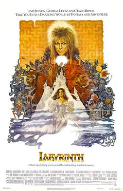

Labyrinth (1986)
Source Card

Photo

Labyrinth is a 1986 musical fantasy film directed by Jim Henson from a screenplay by Terry Jones based on a story conceived by Henson and Dennis Lee. A co-production between Henson Associates and Lucasfilm with George Lucas serving as executive producer, the film stars Jennifer Connelly as teenager Sarah and David Bowie as Jareth, and follows Sarah's journeys through a maze to save her baby brother from the Goblin King.
External Links
This page aggregates references to the source material behind Name Lore entries.